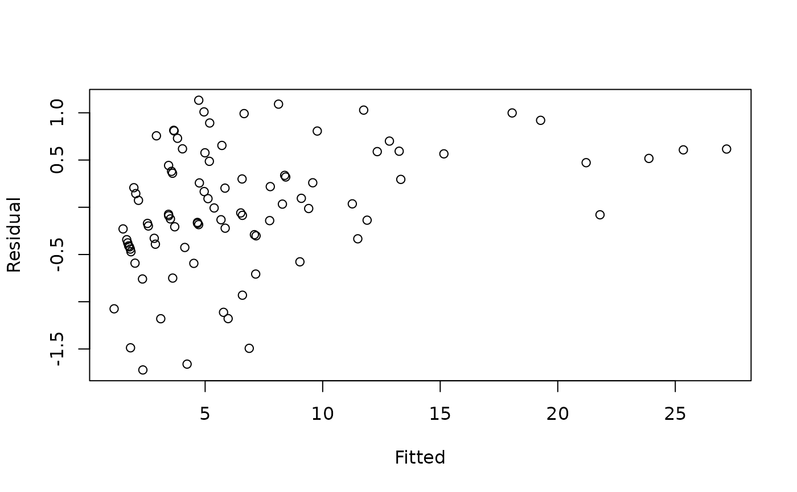

Augment an mvgam object's training data with fitted values and residuals
Source: R/tidier_methods.R
augment.mvgam.RdThe training data with posterior summaries of the fitted value and residual of each row, under broom's column names.
Usage
# S3 method for mvgam
augment(
x,
robust = FALSE,
conf.int = TRUE,
conf.level = 0.95,
resp = NULL,
...
)Arguments
- x
A fitted
mvgamobject.- robust
Logical. If
FALSE(the default), uses mean and standard deviation for summaries. IfTRUE, uses median and median absolute deviation (MAD).- conf.int
Logical.
TRUE(the default) adds the credible interval columns.lower,.upper,.resid.lowerand.resid.upper.- conf.level
Numeric. Probability covered by the credible interval reported in
conf.low/conf.high. Defaults to0.95.- resp
Character specifying which response variable for multivariate models. NULL (default) returns predictions for all responses.
- ...
Unused. Anything passed here is refused.
Value
A tibble (or list, when class(x$data) == "list")
with the original training data plus:
.observed-- the response value..fitted-- the posterior mean (or median) fitted value..se.fit-- the posterior standard deviation (or MAD) of the fitted value..lower,.upper-- the lower / upper bound of theconf.levelcredible interval for.fitted. Present only whenconf.int = TRUE..resid-- the posterior mean (or median) residual..resid.se-- the posterior standard deviation (or MAD) of the residual..resid.lower,.resid.upper-- the residual credible interval bounds. Present only whenconf.int = TRUE..unit-- only for closure-unit families (nmix(),occ()): the closure-unit ID this row belongs to. Rows sharing the same.unitshare the same.resid*columns (see below).
Closure-unit families (nmix(), occ())
.fitted is the expected count of each visit: psi * p for
occ() and lambda * p for nmix(). residuals.mvgam()
computes one residual per closure unit, a site in a season, from
the PIT of the summed visit counts. Each visit row of a unit
repeats that residual. The .unit column names the unit.
See also
fitted.mvgam(), residuals.mvgam()
Other tidiers:
glance.mvgam(),
tidy.mvgam()
Examples
# \dontrun{
set.seed(13)
simdat <- sim_mvgam(family = poisson(), n_series = 1L,
n_timepoints = 120L, trend_model = AR())
mod <- mvgam(y ~ s(x), trend_formula = ~ AR(p = 1),
data = simdat$data_train,
family = poisson(),
chains = 2, silent = 2)
#> Warning: 9 of 2000 (0.0%) transitions ended with a divergence.
#> See https://mc-stan.org/misc/warnings for details.
# The training data with fitted values and residuals appended
aug <- augment(mod)
head(aug)
#> # A tibble: 6 × 13
#> y series time x .observed .fitted .se.fit .lower .upper .resid
#> <int> <fct> <int> <dbl> <int> <dbl> <dbl> <dbl> <dbl> <dbl>
#> 1 2 series_1 1 0.841 2 1.97 0.833 0.756 3.99 0.207
#> 2 14 series_1 2 -1.02 14 13.3 3.10 7.95 20.0 0.295
#> 3 6 series_1 3 -0.441 6 5.84 1.80 2.86 10.2 0.202
#> 4 1 series_1 4 -1.63 1 4.23 1.48 1.91 7.61 -1.66
#> 5 5 series_1 5 1.85 5 3.82 1.40 1.70 6.96 0.730
#> 6 5 series_1 6 -1.96 5 5.38 1.84 2.48 9.69 -0.00750
#> # ℹ 3 more variables: .resid.se <dbl>, .resid.lower <dbl>, .resid.upper <dbl>
# Residuals against fitted values, from one tibble
plot(aug$.fitted, aug$.resid, xlab = "Fitted", ylab = "Residual")

# Next, glance() summarises the whole fit in one row
# }